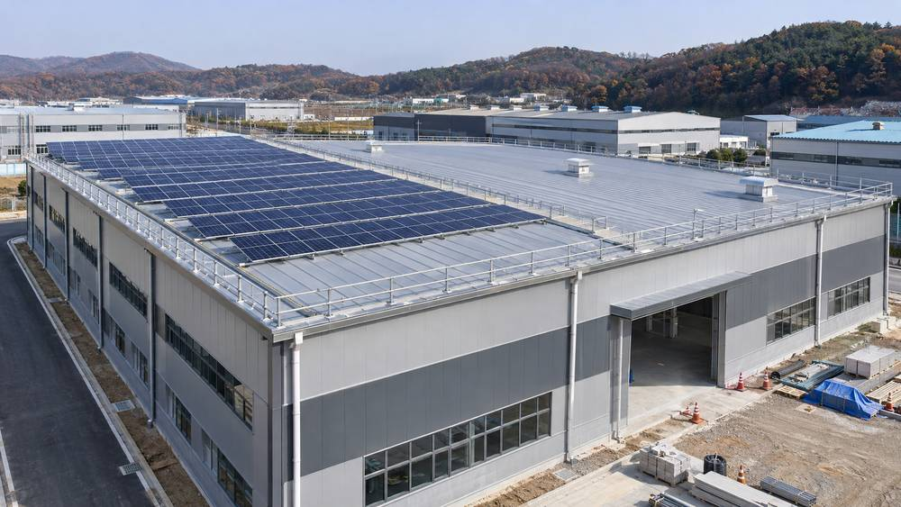

준공 전 산단 지붕·유휴부지 태양광 임대 허용 개정안 발의

산단 태양광 약 2.1GW, 2030년 목표 6GW의 35%…11월 17일 소관 상임위 회부
이언주 의원(더불어민주당, 경기 용인시정) 등 10명이 11월 16일 「산업집적활성화 및 공장설립에 관한 법률」 개정안(의안번호 2222819)을 대표발의했다. 산업단지 입주기업이 공장 설립을 끝내기 전에도 건물 지붕이나 유휴 용지를 태양광 발전사업자에게 빌려줄 수 있게 하는 내용이다. 제안이유서에 따르면 전국 산업단지의 태양광 보급량은 약 2.1GW로, 정부가 2030년까지 세운 6GW 목표의 약 35%이고 남은 물량은 약 3.9GW다. 제안자들은 현행법의 산업용지 임대 규제가 보급의 걸림돌이며 공공 주도 사업만으로는 목표를 채우기 어렵다고 밝혔다.
에너지데일리 보도에 따르면 설계 단계에서 태양광을 반영하면 지붕 하중과 방수, 설비 공간, 유지보수 통로를 미리 정할 수 있어 준공 뒤 보강 공사를 피할 수 있다. 같은 보도는 임대가 열려도 전력망 접속 여유가 사업 속도를 가를 수 있고, 지붕을 빌려줘도 입주기업의 RE100(사용 전력을 재생에너지로 채우는 국제 캠페인) 실적으로 자동 인정되지는 않는다고 짚었다. 장기 임대계약에는 지붕 보수와 보험, 계약 승계, 설비 철거 책임을 따로 정해야 한다는 점도 함께 언급됐다. 개정안은 11월 17일 국회 산업통상자원중소벤처기업위원회에 회부됐다.
뉴스 바로 읽기
본지가 공개 자료와 본지 보도로 확인한 사실만 덧붙입니다
이 개정안은 제439회 국회 정기회에 접수됐고, 고치는 조문은 안 제38조의2제1항제1호와 제38조의3제1항제4호다. 개정 조문 전문은 국민참여입법센터 해당 의안 페이지의 의안원문(hwp·pdf)에 있으며 본지는 아직 열어 보지 못했다. 국가법령정보센터에는 이 법의 2026년 9월 18일 시행본(법률 제21467호)이 올라 있다. 확인한 의안 페이지에는 위원회 심사 일정이 나와 있지 않다.
출처: 에너지데일리 2026-11-16 양미애 원문 보기
출처: 국민참여입법센터 2026-11-16 산업집적활성화 및 공장설립에 관한 법률 일부개정법률안(이언주 의원 등 10인) 의안 정보 원문 보기
출처: 국가법령정보센터 2026-09-18 산업집적활성화 및 공장설립에 관한 법률(시행 2026. 9. 18., 법률 제21467호) 원문 보기
完成前の産業団地でも屋根・遊休地の太陽光賃貸を認める改正案を発議
産業団地の太陽光は約2.1GW、2030年目標6GWの35%…11月17日に所管の常任委員会へ付託
李彦周（イ・オンジュ）議員（共に民主党、京畿道龍仁市丁）ら10人が11月16日、「産業集積活性化及び工場設立に関する法律」の改正案（議案番号2222819）を代表発議した。産業団地の入居企業が工場の設立を終える前でも、建物の屋根や遊休用地を太陽光発電事業者に貸せるようにする内容だ。提案理由書によると、全国の産業団地の太陽光導入量は約2.1GWで、政府が2030年までに掲げた6GW目標の約35%にあたり、残りは約3.9GWである。提案者は、現行法の産業用地の賃貸規制が普及の妨げになっており、公共主導の事業だけでは目標の達成が難しいと説明した。
エネルギーデイリーの報道によると、設計段階で太陽光を織り込めば、屋根の荷重や防水、設備スペース、保守通路をあらかじめ決められ、完成後の補強工事を避けられる。同報道は、賃貸が可能になっても系統接続の余力が事業の速度を左右しうること、屋根を貸しても入居企業のRE100（使用電力を再生可能エネルギーで賄う国際キャンペーン）実績として自動的には認められないことを指摘した。長期の賃貸契約では、屋根の補修、保険、契約の承継、設備撤去の責任を別途定める必要がある点にも触れた。改正案は11月17日、国会の産業通商資源中小ベンチャー企業委員会に付託された。
ニュースをすぐ読む この改正案は第439回国会定期会に提出され、改正対象の条文は案の第38条の2第1項第1号と第38条の3第1項第4号である。改正条文の全文は国民参与立法センターの当該議案ページにある議案原文（hwp・pdf）で確認できるが、本紙はまだ開いて確認していない。国家法令情報センターには、この法律の2026年9月18日施行版（法律第21467号）が掲載されている。確認した議案ページには、委員会の審査日程が載っていない。
出典: 에너지데일리 2026-11-16 양미애 原文を読む
出典: 국민참여입법센터 2026-11-16 산업집적활성화 및 공장설립에 관한 법률 일부개정법률안(이언주 의원 등 10인) 의안 정보 原文を読む
出典: 국가법령정보센터 2026-09-18 산업집적활성화 및 공장설립에 관한 법률(시행 2026. 9. 18., 법률 제21467호) 原文を読む
产业园区工厂竣工前即可出租屋顶和闲置用地发展太阳能，修正案提出
园区太阳能约2.1GW，为2030年目标6GW的35%…11月17日已交付主管常任委员会
议员李彦周（共同民主党，京畿道龙仁市丁）等10人于11月16日牵头提出《产业集聚活性化及工厂设立相关法律》修正案（议案编号2222819）。内容是允许产业园区入驻企业在工厂设立完成之前，把建筑屋顶或闲置用地出租给太阳能发电企业。根据提案理由书，全国产业园区的太阳能装机量约为2.1GW，约占政府设定的2030年6GW目标的35%，剩余约3.9GW。提案人表示，现行法对产业用地的出租限制妨碍了推广，仅靠公共主导的项目难以达成目标。
据能源日报报道，如果在设计阶段就纳入太阳能，可以提前确定屋顶荷载、防水、设备空间和维护通道，避免竣工后的加固工程。该报道指出，即使开放出租，电网接入余量仍可能左右项目进度；出租屋顶也不会自动计入入驻企业的RE100（以可再生能源满足用电的国际倡议）业绩。报道还提到，长期租赁合同需另行约定屋顶维修、保险、合同承继和设备拆除责任。修正案已于11月17日交付国会产业通商资源中小风险企业委员会。
新闻速读 该修正案已提交第439届国会定期会，拟修改的条文为草案第38条之2第1款第1项和第38条之3第1款第4项。修正条文全文载于国民参与立法中心相应议案页面的议案原文（hwp、pdf），本报尚未打开核对。国家法令信息中心登载有该法2026年9月18日施行版（法律第21467号）。所查议案页面未显示委员会的审议日程。
来源: 에너지데일리 2026-11-16 양미애 查看原文
来源: 국민참여입법센터 2026-11-16 산업집적활성화 및 공장설립에 관한 법률 일부개정법률안(이언주 의원 등 10인) 의안 정보 查看原文
来源: 국가법령정보센터 2026-09-18 산업집적활성화 및 공장설립에 관한 법률(시행 2026. 9. 18., 법률 제21467호) 查看原文
Bill would allow solar leases on industrial-park roofs and idle land before completion
Park solar stands at about 2.1GW, 35% of the 2030 goal of 6GW; referred to the standing committee on Nov. 17
Rep. Lee Un-ju (Democratic Party, Yongin-jeong, Gyeonggi Province) and nine other lawmakers introduced an amendment to the Act on Industrial Agglomeration Activation and Factory Establishment (bill number 2222819) on Nov. 16. It would let industrial-park tenants lease building roofs or idle land to solar developers before their factories are finished. According to the explanatory statement, solar capacity in industrial parks nationwide is about 2.1GW, roughly 35% of the government's 6GW goal for 2030, leaving about 3.9GW. The sponsors say current limits on leasing industrial land hold back deployment and that publicly led projects alone cannot reach the goal.
Energy Daily reports that building solar into the design lets roof load, waterproofing, equipment space and maintenance access be planned early, avoiding reinforcement work after completion. The same report notes that even with leasing allowed, spare grid capacity could set the pace of projects, and that leasing a roof is not automatically counted toward a tenant's RE100 record (RE100 is an international campaign to meet power use with renewable energy). It also mentions that long-term leases would need separate terms on roof repairs, insurance, succession of the contract and responsibility for removing equipment. The bill was referred to the National Assembly's Trade, Industry and SMEs Committee on Nov. 17.
News at a Glance The bill was submitted to the 439th regular session of the National Assembly and would amend Article 38-2(1)(1) and Article 38-3(1)(4). The full amended text is in the bill's original document (hwp, pdf) on its page at the Korea legislation opinion portal; this newspaper has not yet opened it. The National Law Information Center lists the act's version in force from Sept. 18, 2026 (Act No. 21467). The bill page we checked shows no committee review schedule.
Source: 에너지데일리 2026-11-16 양미애 Read the original
Source: 국민참여입법센터 2026-11-16 산업집적활성화 및 공장설립에 관한 법률 일부개정법률안(이언주 의원 등 10인) 의안 정보 Read the original
Source: 국가법령정보센터 2026-09-18 산업집적활성화 및 공장설립에 관한 법률(시행 2026. 9. 18., 법률 제21467호) Read the original